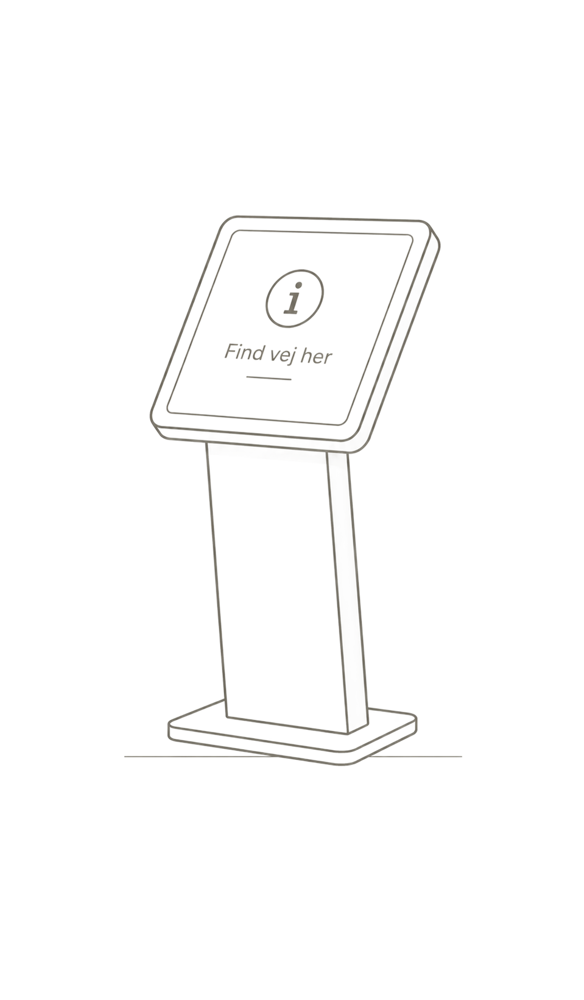
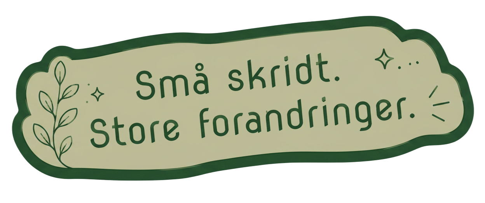
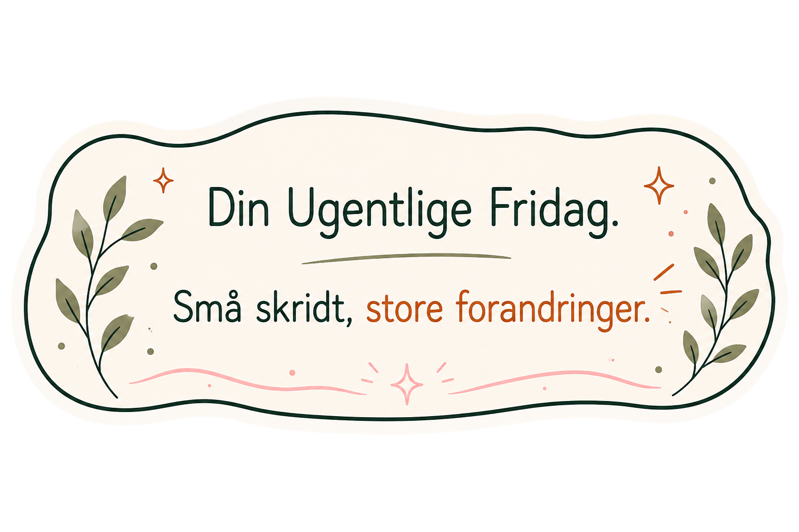

Få svar på det, du er i tvivl om
Find hurtigt svar på de mest almindelige spørgsmål. Vælg et emne nedenfor.

DUF er først og fremmest for alternative behandlere, der gerne vil starte egen praksis eller allerede er i gang, men er gået lidt i stå. Du behøver ikke have det hele på plads. Du skal bare have lyst til at tage næste skridt.
Din Ugentlige Fridag er et udviklingsunivers for alternative behandlere, hvor formålet er at gøre iværksætterdelen af din praksis lettere at gå til. Her arbejder vi med små skridt, refleksion og konkrete handlinger, så du kan finde mere retning og stå stærkere som behandler.
Ja. DUF er både for dig, der står på kanten af at starte, og dig, der allerede er i gang, men mangler retning, struktur eller momentum.

Du behøver ikke vide præcis, hvor du skal starte. Begynd med at undersøge universet og find det sted, der giver mening for dig lige nu. Du kan altid tage næste skridt derfra.
Nej. DUF er også for dig, der stadig er ved at finde din plads som behandler og endnu ikke har klienter.
Det er helt okay. DUF bygger på idéen om, at udvikling godt må ske i små skridt. Du behøver ikke have en hel arbejdsdag til rådighed for at komme videre.

Et vækstrum er et afgrænset område, hvor du arbejder med ét bestemt tema ad gangen. Du får mulighed for at reflektere, lære og tage konkrete skridt uden at skulle overskue det hele på én gang.
Det afhænger af det enkelte vækstrum. Fælles for dem er, at du ikke bare skal læse dig til ny viden. Du skal bruge den til at blive klogere på din egen praksis og finde dit næste skridt.
Ikke nødvendigvis. Vækstrummene er lavet, så du kan tage udgangspunkt i det, der giver mening for dig. Nogle gange er det vigtigste næste skridt ikke det samme for alle. Hvis I senere beslutter en bestemt progression, kan dette svar selvfølgelig ændres.
Det afhænger af det enkelte vækstrum. Vi arbejder med korte bidder og konkrete øvelser, så du kan tage det i et tempo, der passer ind i din hverdag. Men du kan forvente, at hvert vækstrum tager cirka 6-8 timer at gennemføre.
Vækstrummene åbner løbende. Vi bygger og udvikler dem trin for trin, så nye rum kan komme til, når de er klar.

Ja – men ikke helt som et traditionelt online-kursus. DUF kombinerer læring, refleksion og konkrete øvelser. Du skal ikke bare sidde og se undervisning – du skal kunne bruge det, du lærer, i din egen praksis.
Ja. Prøverummet er netop lavet, så du kan opleve DUF i praksis, før du tager stilling til næste skridt.
Prøverummet giver dig mulighed for at snuse til DUF, før du beslutter dig for, om det er noget for dig. Her kan du opleve et lille udsnit af den måde, vi arbejder på.
Det behøver du ikke være. DUF er skabt med fokus på mennesker – ikke på teknik. Du skal kunne koncentrere dig om din egen udvikling uden at skulle være ekspert i digitale værktøjer.
Svar på vej.
Det er helt okay. Du behøver ikke have alle svarene, før du går i gang. Start med det, der fylder mest lige nu – så kan næste skridt blive tydeligere undervejs.

Mangler du stadig svar?
Nogle spørgsmål kræver lidt mere plads end en kort forklaring.
Så tag et kig i Biblioteket. Her finder du guides, artikler og uddybende indhold.